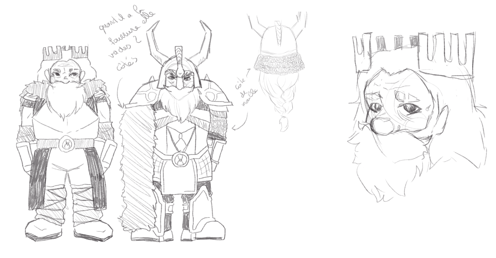
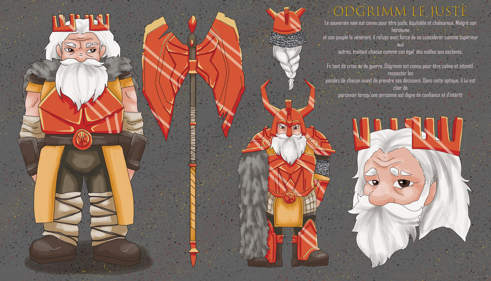

Le Roi Nain
 
Nom : Odgrimm Le Juste
Race : Nain
Taille : 1m40
Poids : 50kg
Age : 9500 ans
Physique :
Comme tous les nains, Odgrimm Le Juste possède une peau qui lui permet de mieuxrésister aux durs climats des montagnes. Elle est aussi plus résistante aux coups. Malgré
son grand âge, le souverain ne se retrouve jamais écrasé par le poids du temps qui passe,
et garde une taille moyenne convenable chez ses pairs.
De par son rang de Haut Roi des Nains, le souverain porte des vêtements finement brodés,
mais demeurant tout de même de la laine, afin de se protéger contre le froid qui règne dans
sa forteresse de pierre. Les beaux vêtements ne cachent tout de même pas une imposante
armure de plaque, forgée dans la plus importante et prospère forge de son royaume expert
en la matière. Ladite armure est ornée sobrement, les nains préférant que les détails aillent
dans le maillage impénétrable plutôt que le soin apporté à l'esthétique.
Odgrimm Le Juste à une apparence de vieil homme entrant dans l’ancien âge, son épaisse
barbe cachant amplement le bas de son visage se teignant lentement de blanc. Ses traits
sont doux et compréhensifs, miroir de sa personnalité de nain bon et juste derrière ses yeux
dorés.
Son visage n’est pourtant pas intact, de longues balafres et traces de combats prouvant qu’il
peut se battre malgré le temps qui passe. Une cicatrice sur l’arrête de son nez et une autre
sur son œil gauche, coupant le sourcil mais miraculeusement épargnant son œil, en
attestent.
Mentalité :
Le souverain nain est connu pour être juste, équitable et chaleureux. Malgré son héroïsmeet son peuple le vénérant, il refuse avec force de se considérer comme supérieur aux
autres, traitant chacun comme son égal, des nobles aux esclaves.
En tant de crise ou de guerre, Odgrimm est connu pour être calme et attentif, respecter les
paroles de chacun avant de prendre ses décisions. Dans cette optique, il lui est clair de
percevoir lorsqu’une personne est digne de confiance et d’intérêt.
Mais Odgrimm n’est pas parfait : malgré son caractère heureux, il ne peut se maîtriser
lorsqu'on lui parle de son neveu, qui souhaite lui succéder au trône et gouverner comme bon
lui chante, tyranniquement.
Si une chose peut amener le Haut Roi dans une rage noire, c’est oser s’en prendre
directement à ses proches, mais aussi menacer son pays, ses terres, ce qu’il a juré de
protéger.